# 「硬核JS」你的程序中可能存在内存泄漏
想来很多同学看到内存泄漏，内心直接会跳出两个字：闭包！！！再让你说点其它的估计就噤声了。如果你对内存泄漏的了解仅限于闭包，那真的是应该仔细看此文了，闭包可能会造成内存泄漏，但是内存泄漏并不是只有闭包，它只是内存泄漏的引子之一罢了。
写的程序运行一段时间后慢慢变卡甚至要崩溃了？
如题，你的程序中可能存在内存泄漏，说到内存泄漏，建议先读 「硬核JS」你真的懂垃圾回收机制吗 一文，然后再来看此文会比较通透，毕竟垃圾回收和内存泄漏是因果关系，垃圾被回收了啥事没有，垃圾没被回收就是内存泄漏。
此文我们会介绍内存泄漏的相关概念和引起内存泄漏的一些问题，还会着重给大家介绍内存泄漏的排查、定位及修复方法（学到即可用到），最后还简单扩展了下前端内存三大件的其他两件内存膨胀和频繁 GC 的概念。
# 什么是内存泄漏
引擎中有垃圾回收机制，它主要针对一些程序中不再使用的对象，对其清理回收释放掉内存。
那么垃圾回收机制会把不再使用的对象（垃圾）全都回收掉吗？
其实引擎虽然针对垃圾回收做了各种优化从而尽可能的确保垃圾得以回收，但并不是说我们就可以完全不用关心这块了，我们代码中依然要主动避免一些不利于引擎做垃圾回收操作，因为不是所有无用对象内存都可以被回收的，那当不再用到的对象内存，没有及时被回收时，我们叫它 内存泄漏（Memory leak）。
# 常见的内存泄漏
代码不规范，同事两行泪，接下来我们看看会引起内存泄漏的一些常见案例。
# 不正当的闭包
闭包就是函数内部嵌套并 return 一个函数？？？这是大多数人认为的闭包，好吧，它确实也是，我们来看看几本 JS 高光书中的描述：
- JavaScript高级程序设计：闭包是指有权访问另一个函数作用域中的变量的函数
- JavaScript权威指南：从技术的角度讲，所有的JavaScript函数都是闭包：它们都是对象，它们都关联到作用域链
- 你不知道的JavaScript：当函数可以记住并访问所在的词法作用域时，就产生了闭包，即使函数是在当前词法作用域之外执行
按照上面三本书中的描述，那闭包所涉及的的范围就比较广了，我们这里暂时不去纠结闭包的定义，就以最简单、大家都认可的闭包例子来看闭包：
function fn1(){
let test = new Array(1000).fill('isboyjc')
return function(){
console.log('hahaha')
}
}
let fn1Child = fn1()
fn1Child()
复制代码
上例是闭包吗？它造成内存泄漏了吗？
显然它是一个典型闭包，但是它并没有造成内存泄漏，因为返回的函数中并没有对 fn1 函数内部的引用，也就是说，函数 fn1 内部的 test 变量完全是可以被回收的，那我们再来看：
function fn2(){
let test = new Array(1000).fill('isboyjc')
return function(){
console.log(test)
return test
}
}
let fn2Child = fn2
fn2Child()
复制代码
上例是闭包吗？它造成内存泄漏了吗？
显然它也是闭包，并且因为 return 的函数中存在函数 fn2 中的 test 变量引用，所以 test 并不会被回收，也就造成了内存泄漏。
那么怎样解决呢？
其实在函数调用后，把外部的引用关系置空就好了，如下：
function fn2(){
let test = new Array(1000).fill('isboyjc')
return function(){
console.log(test)
return test
}
}
let fn2Child = fn2
fn2Child()
fn2Child = null
复制代码
“ 减少使用闭包，闭包会造成内存泄漏。。。 ”
醒醒，这句话是过去式了，它的描述不准确，So，应该说不正当的使用闭包可能会造成内存泄漏。
# 隐式全局变量
我们知道 JavaScript 的垃圾回收是自动执行的，垃圾回收器每隔一段时间就会找出那些不再使用的数据，并释放其所占用的内存空间。
再来看全局变量和局部变量，函数中的局部变量在函数执行结束后这些变量已经不再被需要，所以垃圾回收器会识别并释放它们。但是对于全局变量，垃圾回收器很难判断这些变量什么时候才不被需要，所以全局变量通常不会被回收，我们使用全局变量是 OK 的，但同时我们要避免一些额外的全局变量产生，如下：
function fn(){
// 没有声明从而制造了隐式全局变量test1
test1 = new Array(1000).fill('isboyjc1')
// 函数内部this指向window，制造了隐式全局变量test2
this.test2 = new Array(1000).fill('isboyjc2')
}
fn()
复制代码
调用函数 fn ，因为 没有声明 和 函数中this 的问题造成了两个额外的隐式全局变量，这两个变量不会被回收，这种情况我们要尽可能的避免，在开发中我们可以使用严格模式或者通过 lint 检查来避免这些情况的发生，从而降低内存成本。
除此之外，我们在程序中也会不可避免的使用全局变量，这些全局变量除非被取消或者重新分配之外也是无法回收的，这也就需要我们额外的关注，也就是说当我们在使用全局变量存储数据时，要确保使用后将其置空或者重新分配，当然也很简单，在使用完将其置为 null 即可，特别是在使用全局变量做持续存储大量数据的缓存时，我们一定要记得设置存储上限并及时清理，不然的话数据量越来越大，内存压力也会随之增高。
var test = new Array(10000)
// do something
test = null
复制代码
# 游离DOM引用
考虑到性能或代码简洁方面，我们代码中进行 DOM 时会使用变量缓存 DOM 节点的引用，但移除节点的时候，我们应该同步释放缓存的引用，否则游离的子树无法释放。
<div id="root">
<ul id="ul">
<li></li>
<li></li>
<li id="li3"></li>
<li></li>
</ul>
</div>
<script>
let root = document.querySelector('#root')
let ul = document.querySelector('#ul')
let li3 = document.querySelector('#li3')
// 由于ul变量存在，整个ul及其子元素都不能GC
root.removeChild(ul)
// 虽置空了ul变量，但由于li3变量引用ul的子节点，所以ul元素依然不能被GC
ul = null
// 已无变量引用，此时可以GC
li3 = null
</script>
复制代码
如上所示，当我们使用变量缓存 DOM 节点引用后删除了节点，如果不将缓存引用的变量置空，依然进行不了 GC，也就会出现内存泄漏。
假如我们将父节点置空，但是被删除的父节点其子节点引用也缓存在变量里，那么就会导致整个父 DOM 节点树下整个游离节点树均无法清理，还是会出现内存泄漏，解决办法就是将引用子节点的变量也置空，如下图：
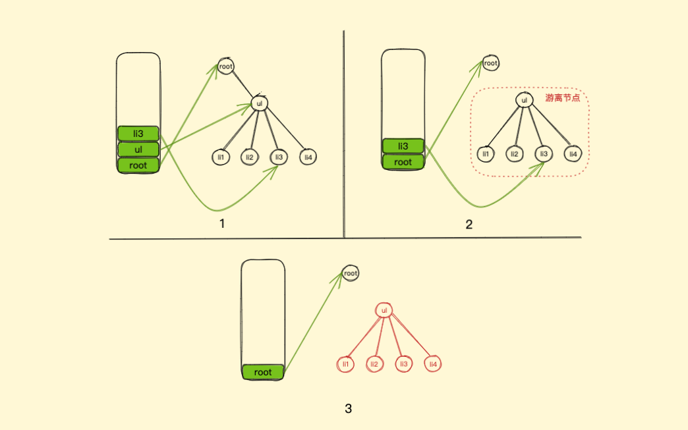
# 遗忘的定时器
程序中我们经常会用到计时器，也就是 setTimeout 和 setInterval，先来看一个例子：
// 获取数据
let someResource = getData()
setInterval(() => {
const node = document.getElementById('Node')
if(node) {
node.innerHTML = JSON.stringify(someResource))
}
}, 1000)
复制代码
上面是我随便 copy 的一个小例子，其代码中每隔一秒就将得到的数据放入到 Node 节点中去，但是在 setInterval 没有结束前，回调函数里的变量以及回调函数本身都无法被回收。
什么才叫结束呢？也就是调用了 clearInterval。如果没有被 clear 掉的话，就会造成内存泄漏。不仅如此，如果回调函数没有被回收，那么回调函数内依赖的变量也没法被回收。所以在上例中，someResource 就没法被回收。
同样，setTiemout 也会有同样的问题，所以，当不需要 interval 或者 timeout 时，最好调用 clearInterval 或者 clearTimeout来清除，另外，浏览器中的 requestAnimationFrame 也存在这个问题，我们需要在不需要的时候用 cancelAnimationFrame API 来取消使用。
# 遗忘的事件监听器
当事件监听器在组件内挂载相关的事件处理函数，而在组件销毁时不主动将其清除时，其中引用的变量或者函数都被认为是需要的而不会进行回收，如果内部引用的变量存储了大量数据，可能会引起页面占用内存过高，这样就造成意外的内存泄漏。
我们就拿 Vue 组件来举例子，React 里也是一样的：
<template>
<div></div>
</template>
<script>
export default {
created() {
window.addEventListener("resize", this.doSomething)
},
beforeDestroy(){
window.removeEventListener("resize", this.doSomething)
},
methods: {
doSomething() {
// do something
}
}
}
</script>
复制代码
# 遗忘的监听者模式
监听者模式想必我们都知道，不管是 Vue 、 React 亦或是其他，对于目前的前端开发框架来说，监听者模式实现一些消息通信都是非常常见的，比如 EventBus. . .
当我们实现了监听者模式并在组件内挂载相关的事件处理函数，而在组件销毁时不主动将其清除时，其中引用的变量或者函数都被认为是需要的而不会进行回收，如果内部引用的变量存储了大量数据，可能会引起页面占用内存过高，这样也会造成意外的内存泄漏。
还是用 Vue 组件举例子，因为比较简单：
<template>
<div></div>
</template>
<script>
export default {
created() {
eventBus.on("test", this.doSomething)
},
beforeDestroy(){
eventBus.off("test", this.doSomething)
},
methods: {
doSomething() {
// do something
}
}
}
</script>
复制代码
如上，我们只需在 beforeDestroy 组件销毁生命周期里将其清除即可。
# 遗忘的Map、Set对象
当使用 Map 或 Set 存储对象时，同 Object 一致都是强引用，如果不将其主动清除引用，其同样会造成内存不自动进行回收。
如果使用 Map ，对于键为对象的情况，可以采用 WeakMap，WeakMap 对象同样用来保存键值对，对于键是弱引用（注：WeakMap 只对于键是弱引用），且必须为一个对象，而值可以是任意的对象或者原始值，由于是对于对象的弱引用，不会干扰 Js 的垃圾回收。
如果需要使用 Set 引用对象，可以采用 WeakSet，WeakSet 对象允许存储对象弱引用的唯一值，WeakSet 对象中的值同样不会重复，且只能保存对象的弱引用，同样由于是对于对象的弱引用，不会干扰 Js 的垃圾回收。
这里可能需要简单介绍下，谈弱引用，我们先来说强引用，之前我们说 JS 的垃圾回收机制是如果我们持有对一个对象的引用，那么这个对象就不会被垃圾回收，这里的引用，指的就是 强引用 ，而弱引用就是一个对象若只被弱引用所引用，则被认为是不可访问（或弱可访问）的，因此可能在任何时刻被回收。
不明白？来看例子就晓得了：
// obj是一个强引用，对象存于内存，可用
let obj = {id: 1}
// 重写obj引用
obj = null
// 对象从内存移除，回收 {id: 1} 对象
复制代码
上面是一个简单的通过重写引用来清除对象引用，使其可回收。
再看下面这个：
let obj = {id: 1}
let user = {info: obj}
let set = new Set([obj])
let map = new Map([[obj, 'hahaha']])
// 重写obj
obj = null
console.log(user.info) // {id: 1}
console.log(set)
console.log(map)
复制代码
此例我们重写 obj 以后，{id: 1} 依然会存在于内存中，因为 user 对象以及后面的 set/map 都强引用了它，Set/Map、对象、数组对象等都是强引用，所以我们仍然可以获取到 {id: 1} ，我们想要清除那就只能重写所有引用将其置空了。
接下来我们看 WeakMap 以及 WeakSet：
let obj = {id: 1}
let weakSet = new WeakSet([obj])
let weakMap = new WeakMap([[obj, 'hahaha']])
// 重写obj引用
obj = null
// {id: 1} 将在下一次 GC 中从内存中删除
复制代码
如上所示，使用了 WeakMap 以及 WeakSet 即为弱引用，将 obj 引用置为 null 后，对象 {id: 1} 将在下一次 GC 中被清理出内存。
# 未清理的Console输出
写代码的过程中，肯定避免不了一些输出，在一些小团队中可能项目上线也不清理这些 console，殊不知这些 console 也是隐患，同时也是容易被忽略的，我们之所以在控制台能看到数据输出，是因为浏览器保存了我们输出对象的信息数据引用，也正是因此未清理的 console 如果输出了对象也会造成内存泄漏。
所以，开发环境下我们可以使用控制台输出来便于我们调试，但是在生产环境下，一定要及时清理掉输出。
可能有同学会觉得不可思议，甚至不相信，这里我们留一个例子，大家看完文章刚好可以自己测试一下，可以先保存这段代码哦！（如何测试看完下文就明白啦）
<!DOCTYPE html>
<html lang="en">
<head>
<meta charset="UTF-8">
<title>test</title>
</head>
<body>
<button id="click">click</button>
<script>
!function () {
function Test() {
this.init()
}
Test.prototype.init = function () {
this.a = new Array(10000).fill('isboyjc')
console.log(this)
}
document.querySelector('#click').onclick = function () {
new Test();
}
}()
</script>
</body>
</html>
复制代码
# 内存泄漏排查、定位与修复
正如开头所说，程序运行一段时间后慢慢变卡甚至要崩溃了，不知道是什么原因，那我们就通过一个例子来走一遍排查、定位以及修复内存泄漏的整个流程，敲黑板，这是大家真正能够用上的。
既然上面我们说了几个会造成内存泄漏的案例，那我们就用这些案例写个 Demo 来从浏览器的角度反推排查是否存在内存泄漏，存在的话定位泄漏源并给予修复。
首先，我们来捏造一个内存泄漏例子：
<!DOCTYPE html>
<html lang="en">
<head>
<meta charset="UTF-8">
<title>test</title>
</head>
<body>
<button id="click">click</button>
<h1 id="content"></h1>
<script>
let click = document.querySelector("#click");
let content = document.querySelector("#content")
let arr = []
function closures() {
let test = new Array(1000).fill('isboyjc')
return function () {
return test
}
}
click.addEventListener("click", function () {
arr.push(closures())
arr.push(closures())
content.innerHTML = arr.length
});
</script>
</body>
</html>
复制代码
如上所示，这是一个非常简单的由不正当使用闭包构成的内存泄漏例子。
我们先来简单介绍下，只看 script 中的 JS 代码即可，首先，我们有一个 closures 函数，这是一个闭包函数，最简单的闭包函数想必不用向大家介绍了吧，然后我们为页面中的 button 元素绑定了一个点击事件，每次点击都将执行 2 次闭包函数并将其执行结果 push 到全局数组 arr 中，由于闭包函数执行结果也是一个函数并且存在对原闭包函数内部数组 test 的引用，所以 arr 数组中每一项元素都使得其引用的闭包内部 test 数组对象无法回收，arr 数组有多少元素，也就代表着我们存在多少次闭包引用，所以此程序点击次数越多，push 的越多，内存消耗越大，页面也会越来越卡。
那为了便于后期观察，程序中我们在每次点击按钮后，都把全局数组 arr 的长度数据更新到了页面上，即从 0 开始，每点击一次，页面数值加 2。
当然，这是我们自己写的例子，作为上帝的我们知道是什么原因导致的，那现在，忘掉这些，假设这是我们的一个项目程序，开发完成交付给测试，测试小姐姐发现在程序中不断点击按钮后页面越来越迟钝了，随即提了BUG。
作为程序员的我们肯定是：“刷新下页面不就好了，卡了就刷新刷新！！！”
嗯。。。产品和测试肯定都不会答应，一句用户至上就让我们改。。
行吧，那就改，首先第一步就要排查是哪里出了问题、是什么引起的，那此环节我们就叫排查问题阶段好了。
# 排查问题
Chrome 的开发者工具也就是我们所说的浏览器控制台（Chrome Devtool ）功能其实十分强大，通过它可以帮助我们分析程序中像性能、安全、网络等各种东西，也可以让我们快速定位到问题源，只是大多数人并不熟悉其使用而已。
由于此文我们以内存泄漏为主，那我们就默认上述程序已经排查了除内存之外所有项且都没问题，接下来开始排查内存这块。
首先我们开启浏览器的无痕模式，接着打开要检查的网页程序代码，然后打开控制台，整个程序界面非常简单，如下图：
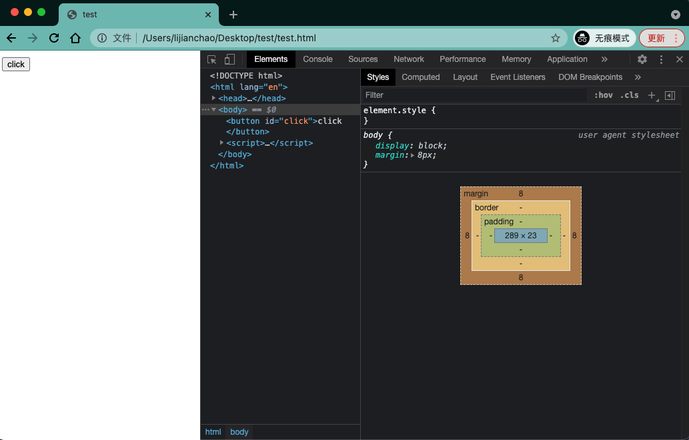
接着我们找到 Performance 这一面板，之前叫 Timeline ，它是 Chrome Devtool 用来监控性能指标的一个利器，可以记录并分析在网站的生命周期内所发生的各类事件，我们就可以通过它监控我们程序中的各种性能情况并分析，其中就包括内存，如下图：
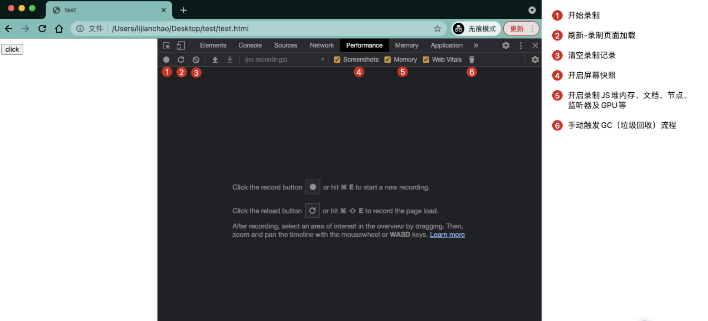
接下来开始操作，在开始之前一定要确认勾选了 Memory 选项也就是上图标记 5 ，这样我们才可以看到内存相关的分析。
点击开始录制（标记 1）进入录制状态，随后先清理一下GC，也就是点击小垃圾桶（标记 6）。
接着疯狂点击页面中 click 按钮 100 次，这时页面上的数值应该是 200，我们再点击一下小垃圾桶，手动触发一次 GC。
再次疯狂点击页面中 click 按钮 100 次，这时页面上的数值应该是 400，然后停止录制。
我们来观察控制台生成的数据面板，如下图：
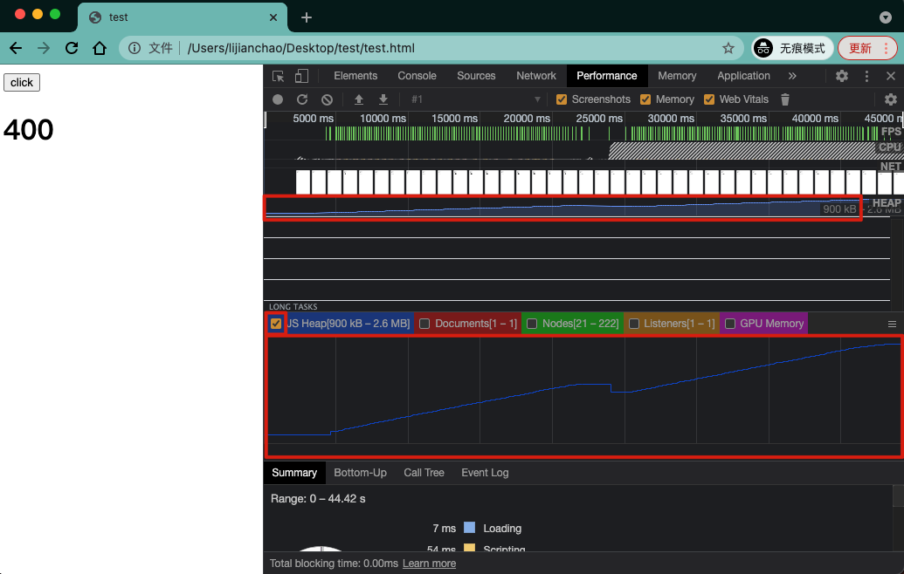
上面圈红的两块，也就是 Heap 对应的部分表示内存在周期性的回落，简单说就是我们的内存情况。
我们可以很明显的看到，内存数据呈现出一个不断上涨的趋势，可能有人会说这段时间内是不是还没执行 GC 呢？别急，还记得我们在 200 的时候点击了一下小垃圾桶吗，也就是我们中间手动触发垃圾回收一次，我们就可以通过上面的页面快照找出当页面值为 200 的那一刻在哪里，很简单，鼠标移到内存快照上找就行了，如下图：
可以看到，即使我们中间手动做了一次垃圾回收操作，但清理后的内存并没有减少很多，由此我们推断，此程序的点击操作可能存在内存泄漏。
OK，排查到问题了，那接下来就是定位泄漏源在哪了。
你可能会说，既然已经找到问题所在就是点击事件了，直接去改不就完了？
要知道，这是我们写的一个简单的例子，我们一下子就可以看出问题在哪，但是真实项目中一个点击事件里就可能存在大量操作，而我们只知道点击事件可能导致了内存泄漏，但不知道具体问题是在点击事件的哪一步骤上，更加细粒度的引起原因和位置我们也不知，这些都还需要我们进一步分析去定位。
# 分析定位
接下来我们开始分析定位泄漏源
Chrome Devtool 还为我们提供了 Memory 面板，它可以为我们提供更多详细信息，比如记录 JS CPU 执行时间细节、显示 JS 对象和相关的DOM节点的内存消耗、记录内存的分配细节等。
其中的 Heap Profiling 可以记录当前的堆内存 heap 的快照，并生成对象的描述文件，该描述文件给出了当下 JS 运行所用的所有对象，以及这些对象所占用的内存大小、引用的层级关系等等，用它就可以定位出引起问题的具体原因以及位置。
注意，可不是 Performance 面板下那个 Memory ，而是与 Performance 面板同级的 Memory 面板，如下图：
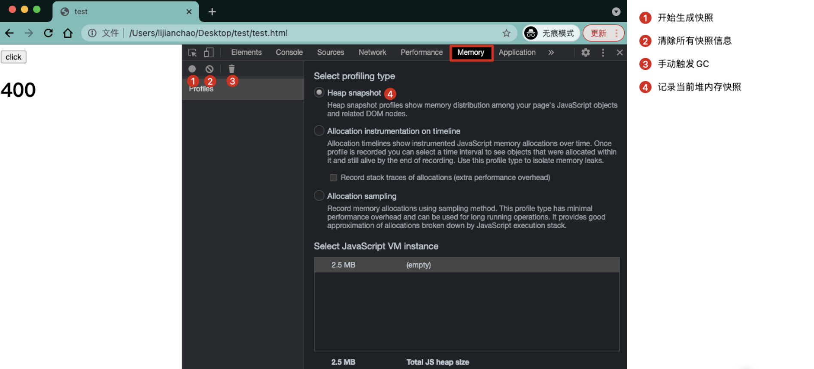
现在页面值为 400，当然也可以刷新一下页面从 0 开始，这里我们选择继续操作
首先点击一下小垃圾桶（标记 3），触发一下 GC，把没用的东西从内存中干掉
点击开始生成快照（标记 1），生成第一次快照并选中，如下图：
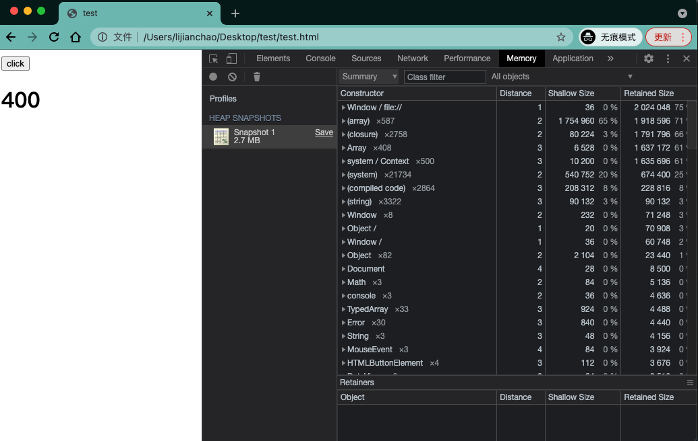
简单介绍小上图大概表示的什么意思：
左侧列表中的 Snapshot 1 代表了我们生成的快照1，也就是刚刚那一刻的内存状态
选中 Snapshot 1 后就是右侧视图表格了，表格左上方有一个下拉框，它有四个值
- Summary：按照构造函数进行分组，捕获对象和其使用内存的情况，可理解为一个内存摘要，用于跟踪定位DOM节点的内存泄漏
- Comparison：对比某个操作前后的内存快照区别，分析操作前后内存释放情况等，便于确认内存是否存在泄漏及造成原因
- Containment：探测堆的具体内容，提供一个视图来查看对象结构，有助分析对象引用情况，可分析闭包及更深层次的对象分析
- Statistics：统计视图
该下拉默认会为我们选择 Summary ，所以下方表格展示的就是快照1中数据的内存摘要，简单理解就是快照1生成的那一刻，内存中都存了什么，包括占用内存的信息等等。
来简单了解下 Summary 选项数据表格的列都表示什么
- Constructor：显示所有的构造函数，点击每一个构造函数可以查看由该构造函数创建的所有对象
- Distance：显示通过最短的节点路径到根节点的距离，引用层级
- Shallow Size：显示对象所占内存，不包含内部引用的其他对象所占的内存
- Retained Size：显示对象所占的总内存，包含内部引用的其他对象所占的内存
OK，暂时知道这么多就可以了，我们继续操作，先点击小垃圾桶手动执行一次GC，然后点击 1 下页面的 click 按钮，最后再次点击生成快照按钮，生成我们的第二次快照。
为了准确无误，我们多来几次操作，如下：
先点击小垃圾桶手动执行一次 GC，然后点击 2 下页面的 click 按钮，最后再次点击生成快照按钮，生成我们的第三次快照
先点击小垃圾桶手动执行一次 GC，然后点击 3 下页面的 click 按钮，最后再次点击生成快照按钮，生成我们的第四次快照
随后，我们选中快照2，并将其上面的下拉框由默认的 Summary 选项切换为 comparison 选项，也就是对比当前快照与之前一次快照的内存区别，如下图：
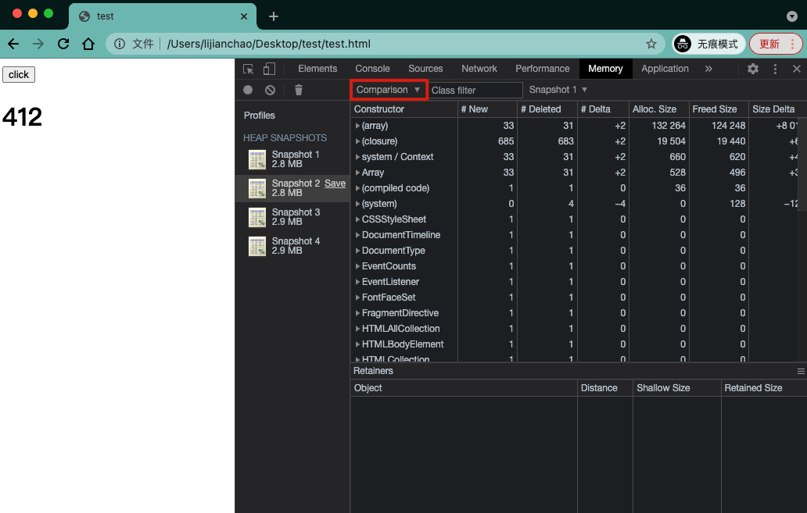
我们再来看看选择 Comparison 下拉后，下方的表格列代表着什么，这里介绍几个重要的
- New：新建了多少个对象
- Deleted：回收了多少个对象
- Delta：新建的对象数 减去 回收的对象数
诶，到这我们就有点那味儿了，我们需要重点关注 Delta ，只要它是正数就可能存在问题，贴心的控制台都已经给我们排好序了，最上面的几个我们依次看就可以。
当然，我们还需要知道这每一行的数据都代表的是什么，注意力转移到 Constructor 这一列，我们也说过，此列是构造函数，每一个构造函数点击都可以查看由该构造函数创建的所有对象，还是要先介绍下此列中常见的构造函数大致代表什么
- system、system/Context 表示引擎自己创建的以及上下文创建的一些引用，这些不用太关注，不重要
- closure 表示一些函数闭包中的对象引用
- array、string、number、regexp 这一系列也能看出，就是引用了数组、字符串、数字或正则表达式的对象类型
- HTMLDivElement、HTMLAnchorElement、DocumentFragment等等这些其实就是你的代码中对元素的引用或者指定的 DOM 对象引用
诶，又清晰了很多，那接下来我们就可以依次对比 1->2 / 2->3 / 3->4 来看到底哪里有问题了。
别着急，想一下现在的我们要怎么做？需要单独的点击一个快照再选中 comparison ，然后看 Delta 列为正数的项再进行分析，这样的操作需要进行 3 次，因为我们有 4 个快照，需要对比分析 3 次，甚至有时候可能生成的快照更多以此来确保准确性。
有没有更简单的方式呢？有的，我们可以直接选中要对比的快照，右侧表格上还有一个弹框我们可以直接选择快照进行对比，并且还会贴心的为我们过滤掉一些没用的信息：
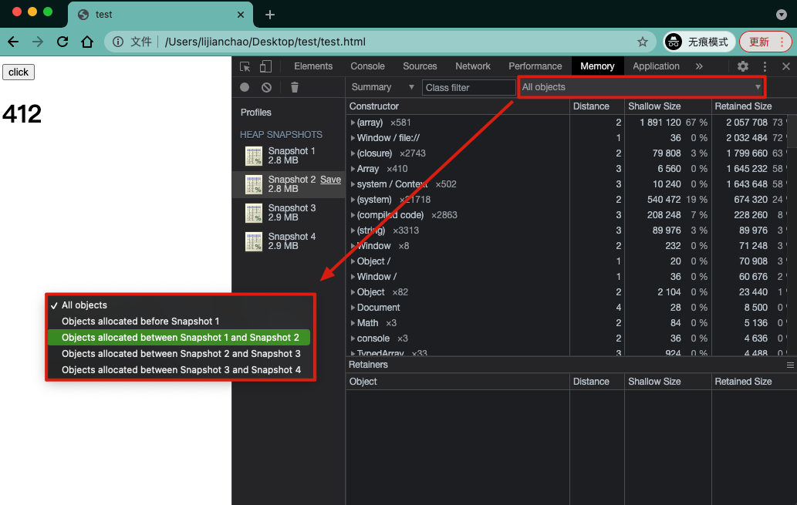
我们来进行实际操作，左侧选中快照2，选择 快照1 与 快照2 进行对比分析，结果如下：
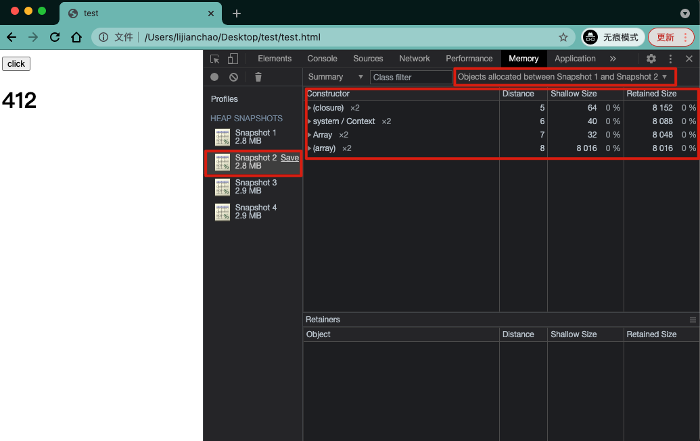
可以看到，列表中只剩下对比过滤后的 4 项差异
system/Context 我们无需关心。
closure 上面也说过代表闭包引用，我们点击此项看一下具体的信息：
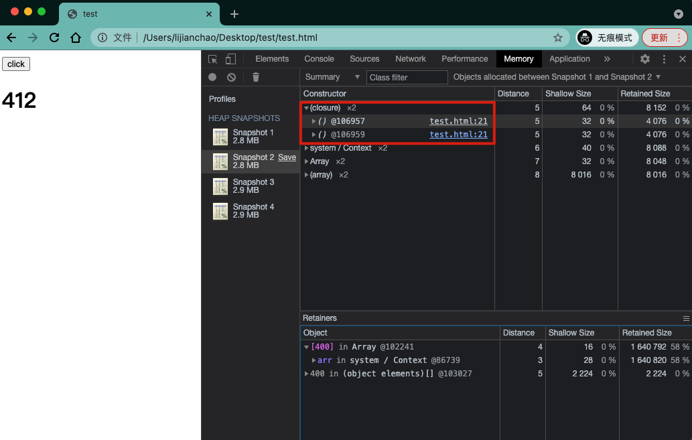
可以看到， closure 下有两个引用，还贴心的为我们指出了在代码的 21 行，点击选中其中一个引用，下方还有更详细的信息展示。
为什么展开后是两个引用？还记得我们在生成 快照2 时的操作吗，手动执行了一次 GC 并点击了一次 click 按钮，触发了一次点击事件，点击事件中我们执行并 push 了两次闭包函数，所以就是 2 条记录。
最后我们看 array ，这里存在数组的引用是完全因为我们案例代码中那个全局数组变量 arr 的存在，毕竟每次点击都 push 数据呢，这也是我们上面提到的为什么要额外关注全局变量的使用、要将它及时清理什么的，就是因为像这种情况你不清理的话这些全局变量在页面关闭前就一直在内存里，可能大家对构造函数列中有 2 项都是数组有疑问，其实没毛病，一项代表的是 arr 本身，一项代表的是闭包内部引用的数组变量 test （忘了的话回顾一下上面案例代码），这点也可以通过 Distance 列中表示的引用层级来 GET，一个层级是 7，一个层级是 8。至于数组引起泄漏的代码位置我们也可以点击展开并选中其引用条目，详情里就可以看到代码位置，同上面闭包一样的操作，这里就不演示了。
诶，那好像就知道具体的泄漏源了，我们再次证实一下，左侧选中快照4，选择 快照3 与 快照4 进行对比分析，快照4 前我们做的操作是手动执行了一次 GC 并点击了三次 click 按钮，如果上述结论正确的话，应该同我们上面 快照1 和 快照2 对比结果的数据项一致都是 4 项，但是每项的内部引用会是 6 条，因为这次快照前我们点击了三次按钮，每次执行并 push 了两次闭包函数，来看结果：
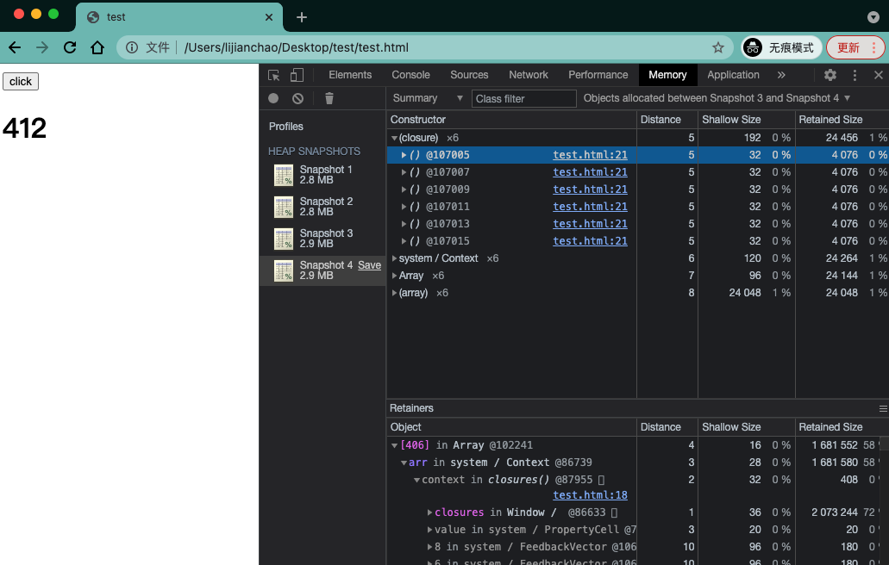
嗯，到这里一切好像变得清晰明朗了，问题一共有 2 个，一是代码 21 行的闭包引用数组造成的内存泄漏，二是全局变量 arr 的元素不断增多造成的内存泄漏。
分析定位成功，进入下一步骤，修复并再次验证。
# 修复验证
由于这是临时写的一个案例，没有具体的场景，所以也就没有办法使用针对性的方式来修复，So，此步骤暂时忽略，不过在项目中我们还是要解决的。
比如全局对象一直增大这个问题，全局对象我们无法避免，但是可以限制一下全局对象的大小，根据场景可以超出就清理一部分。
比如闭包引用的问题，不让它引用，或者执行完置空，这都是上面说过的。
总之，一切都需要根据具体场景选择解决方案，解决之后重复上面排查流程看内存即可。
# 内存三大件
其实前端关于内存方面主要有三个问题，我把它们亲切的称作内存三大件：
内存泄漏 我们说很久了，对象已经不再使用但没有被回收，内存没有被释放，即内存泄漏，那想要避免就避免让无用数据还存在引用关系，也就是多注意我们上面说的常见的几种内存泄漏的情况。
内存膨胀 即在短时间内内存占用极速上升到达一个峰值，想要避免需要使用技术手段减少对内存的占用。
频繁 GC 同这个名字，就是 GC 执行的特别频繁，一般出现在频繁使用大的临时变量导致新生代空间被装满的速度极快，而每次新生代装满时就会触发 GC，频繁 GC 同样会导致页面卡顿，想要避免的话就不要搞太多的临时变量，因为临时变量不用了就会被回收，这和我们内存泄漏中说避免使用全局变量冲突，其实，只要把握好其中的度，不太过分就 OK。
# 最后
如果你的程序运行出现卡顿却找不到原因，那不妨试试本文的排查方法吧，说不定就是内存泄漏引起的，同时，它也是我们在做页面优化时需要额外注意的一个点。
今天就到这里了，你 GET 到了吗？欢迎指误堪错！写作不易，动动小手点个赞吧，收藏吃灰是大忌
也欢迎关注 「硬核JS」 专栏，一文深入介绍一个 JS 小知识，让你知道你不知道的 JavaScript！！！
文章来源：https://juejin.cn/post/6984188410659340324